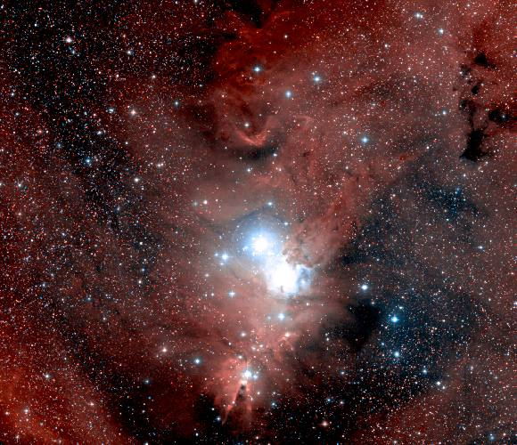
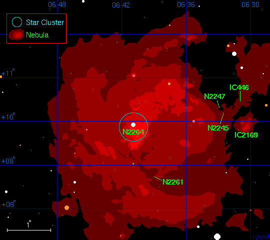
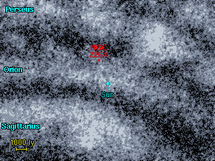
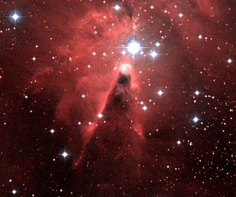
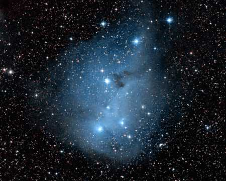
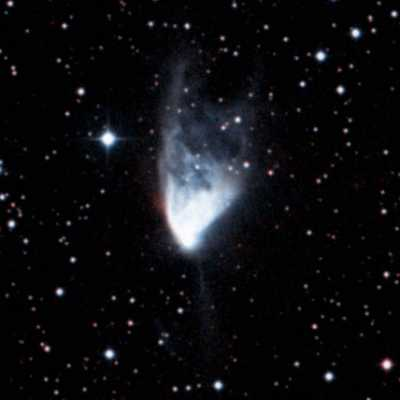

NGC2264 - سديم المخروط
سديم شهير موجود في ذراع الجبار المجري و يحيط بعنقود نجمي يدعى NGC 2264 . المخروط 'cone' يتمثل بسديم مثلثي الشكل و عاتم في القسم السفلي من السديم. النجم اللامع في الصورة هو 15 Monocerotis (أو ما يسمى 'S Monocerotis') - و هو نظام نجمي رباعي التكوين. فيه أربعة نجوم بيضاء - زرقاء لامعة من الصنف (O7,
B7, B8, A6) و هي مسؤولة جزئيا عن توهج السديم.

سديم المخروط
Image size: 1.7°x1.5°. DSS image © CalTech/Palomar
السدم المرتبطة بسديم المخروط
أدناه جدول يمثل لائحة بالسدم الرئيسية الموجودة في هذه المنطقة. سديم المخروط
(NGC 2264) الرئيسي في المنطقة - و هو الجزء الألمع من سديم إصداري لامع كبير و هو السديم الوحيد الذي نعرف بعده الدقيق عنا.
المسافة إلى بقية السدم غير مؤكدة تماما.
تبدو السدم IC 446 و NGC 2245 بعيدة بضعة آلاف سنوات ضوئية خلف سديم المخروط، و جميع السدم الباقية ربما تكون مرتبطة بسديم المخروط.
1 2 3 4 5 6 7 8
Catalogue Equatorial Galactic Size Type Distance Size Other Names
Number Coordinates Coordinates (arcmins) (ly) (ly)
RA (2000) Dec l° b°
---------------------------------------------------------------------------------------------
IC 446 06 31.1 +10 27 201.3 +0.3 5' R 8000 12
IC 2169 06 31.0 +09 54 201.8 +0.0 25' R 1500 11
IC 448 06 32.8 +07 23 204.2 -0.8 15' R 1500 7
NGC 2245 06 32.7 +10 09 201.8 +0.5 5' R 8000 12
NGC 2247 06 33.1 +10 19 201.7 +0.7 4' R 1000 1
NGC 2261 06 39.2 +08 45 203.8 +1.3 3' RE 3000 3 Hubble's variable nebula
NGC 2264 06 41.0 +09 54 202.9 +2.2 60' E 2200 40 Cone Nebula
|
---------------------------------------------------------------------
العمود 1: إسم السديم النظامي في المصنف.
العمود 2: إحداثيات المطلع المستقيم و الميل - حولية فلكية للعام 2000.
العمود 3: إحداثيات الطول (l) و العرض (b) المجريين.
العمود 4: الحجم الزاوي للسديم بالدقيقة القوسية.
العمود 5: نوع السديم E = إصداري, R = إنعكاسي.
العمود 6: المسافة التقريبية إلى السديم مقدرة بالسنة الضوئية.
العمود 7: الحجم التقريبي للسديم مقدرا بالسنة الضوئية.
العمود 8: الاسم البديل للسديم.
|
العناقيد النجمية المرتبطة بسديم المخروط
يوجد عنقود نجمي وحيد مرتبط بسديم المخروط و يدعى NGC 2264
و يقع في مركز السديم و يتبع له النجم اللامع 15 Monocerotis. و يعرف أحيانا هذا العنقود باسم 'شجرة الميلاد'و ذلك يعود إلى شكله الشبيه بالمثلث.
1 2 3 4 5 6 7
Catalogue Equatorial Galactic Size Distance Age Other Names
Name Coordinates Coordinates (arcmins) (ly) (million
RA (2000) Dec l° b° years)
-------------------------------------------------------------------------------------------
NGC 2264 06 41.0 +09 54 203.0 +2.2 39' 2200 9 Christmas Tree Cluster
|
العمود 1: إسم العنقود النجمي النظامي في المصنف.
العمود 2: إحداثيات المطلع المستقيم و الميل - حولية فلكية للعام 2000.
العمود 3: إحداثيات الطول (l) و العرض (b) المجريين.
العمود 4: الحجم الزاوي للعنقود النجمي مقدرا بالدقيقة القوسية.
العمود 5: المسافة إلى العنقود النجمي مقدرة بالسنة الضوئية.
العمود 6: العمر التقريبي للعنقود النجمي مقدرا بملايين السنين.
العمود 7: الاسم البديل للعنقود النجمي.
References: Dias W, Alessi B, Moitinho A, Lepine J, (2002). New catalogue of optically
visible open clusters and candidates. Astron and Astrophys, 389, 871.
|
خريطة سديم المخروط
هذه خريطة لمنطقة سديم المخروط، يشير اسم سديم المخروط (NGC 2264) عادة إلى المنطقة اللامعة في المنتصف. و تظهر هذه الصورة سديما إصداريا يمتد 5درجات قوسية في السماء (حوالي 190 سنة ضوئية)
، كذلك تم تحديد مواضع بقية السدم، و يظهر أيضا ذلك السديم الوحيد و الكبير يدعى IC 2169 و هو سديم إنعكاسي.

موضع سديم المخروط
|

|
المسافة إلى السديم معروفة بشكل جيد، لوجود عنقود نجمي في مركز السدبم. و يبعد السديم عنا مسافة 2200 سنة ضوئية، مما يعني وجود السديم ضمن ذراع الجبار المجري، على بعد يزيد 900 سنة ضوئية من بعد سديم الجبار عنا.
|
| إلى اليسار- صورة عن قرب 'للمخروط' في سديم المخروط. و هذا الشكل المثلثي ربما سببه تدفقات غازية آتية من نجم موجود بالقرب من رأس المخروط.
|

NGC 2264. Image size: 0.33°x0.28°. DSS image.
|

IC 2169. Image size: 0.66°x0.53°. DSS image.
|
إلى اليمين - سديم IC 2169 الإنعكاسي، الذي انفصل عن سديم المخروط. و يعتقد بأنه كان جزءا من الغيمة الجزيئية نفسها. يعتبر سديما انعكاسيا نموذجي. فالغبار الموجود في السديم يتسبب في تشتيت الضوء داخله، مما يجعل السديم متوهجا بلون أزرق.
|
| إلى اليسار - سديم هابل المتغير. يقع خلف سديم المخروط و يحيط بنجم يدعى R Monocerotis .
و هو سديم ثنائي الأقطاب bipolar nebula
فهناك يقبع داخله نجم ينفث دفقين غازيين و يحتوي هذا السديم على نجوم تدعى أجسام 'Herbig-Haro'
objects - و التوهج يرجع سببه إلى وجود دفقات من الغاز و الرياح النجمية التي تصطدم بالوسط البينجمي المحيط بها. يبلغ طول السديم 3 سنوات ضوئية، و يتغير لمعان السديم تبعا لتغير لمعان النجم، ما بين القدر 9.3 و القدر 14.0.
|

NGC 2261. Image size: 0.12°x0.12°. DSS image.
|